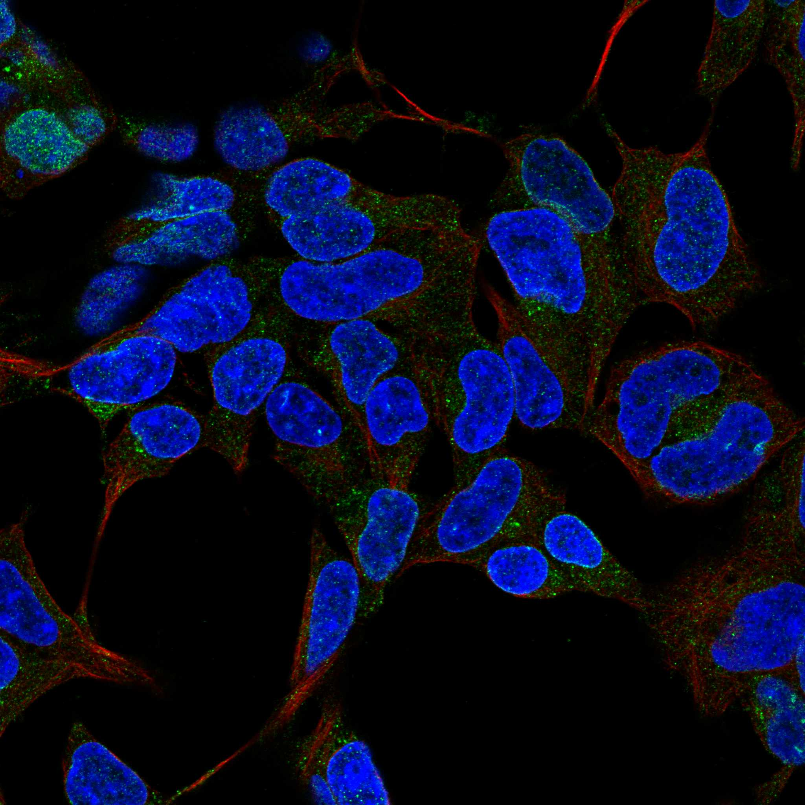
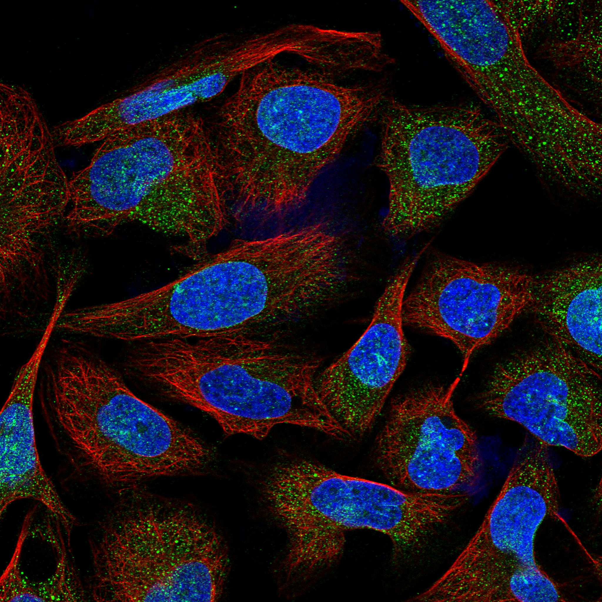

type: protein-evaluation gene: "BTNL9" date: 2026-06-03 tags: [protein-scout, nuclear-protein, evaluation] status: scored ---
BTNL9 核蛋白评估报告 (Full Re-evaluation)
1. 基本信息
| 项目 | 内容 |
|---|---|
| 基因名 / 别名 | BTNL9 |
| 蛋白名称 | Butyrophilin-like protein 9 |
| 蛋白大小 | 535 aa / 59.7 kDa |
| UniProt ID | Q6UXG8 |
| 评估日期 | 2026-06-03 |
IF 图像:  
2. 评分总览
| 维度 | 得分 | 满分 | 加权后 | 关键证据摘要 |
|---|---|---|---|---|
| 🔴 核定位特异性 | 4/10 | ×4 | 16 | HPA: Nuclear membrane; 额外: Vesicles; UniProt: Membrane |
| 📏 蛋白大小 | 10/10 | ×1 | 10 | 535 aa / 59.7 kDa |
| 🆕 研究新颖性 | 8/10 | ×5 | 40 | PubMed strict=21 篇 (≤40→8) |
| 🏗️ 三维结构 | 7/10 | ×3 | 21 | AlphaFold v6 pLDDT=83.7; PDB: 无 |
| 🧬 调控结构域 | 8/10 | ×2 | 16 | InterPro: IPR001870, IPR043136, IPR053896, IPR003879, IPR013 |
| 🔗 PPI 网络 | 3/10 | ×3 | 9 | STRING 15 partners; IntAct 15 interactions |
| ➕ 互证加分 | — | max +3 | 1.5 | PDB+AF+STRING+IntAct cross-validation |
| 原始总分 | 113.5/180 | |||
| 归一化总分 | 63.1/100 |
3. 详细分析
3.1 核定位证据
| 来源 | 定位 | 可信度 |
|---|---|---|
| Protein Atlas (IF) | Nuclear membrane; 额外: Vesicles | Approved |
| UniProt | Membrane | Swiss-Prot/TrEMBL |
GO Cellular Component:
- external side of plasma membrane (GO:0009897)
- plasma membrane (GO:0005886)
结论: 核定位信号较弱，多个数据源显示混合定位或非核偏好。
3.2 蛋白大小评估
评价: 大小适中（200-800 aa），适合常规生化实验和结构解析。
3.3 研究现状
| 指标 | 数值 |
|---|---|
| PubMed strict count | 21 |
| PubMed broad count | 30 |
| 别名(未计入scoring) |
关键文献: 1. Novel drug resistance mechanisms and drug targets in BRAF-mutated peritoneal metastasis from colorectal cancer.. *Journal of translational medicine*. PMID: 38982444 2. Butyrophilin-like 9 expression is associated with outcome in lung adenocarcinoma.. *BMC cancer*. PMID: 34635082 3. BTNL9 exerts anti-cancer effects by inhibiting CDC20 to induce G2/M arrest in pancreatic cancer.. *World journal of gastrointestinal oncology*. PMID: 40697247 4. Comprehensive analysis of BTNL9 as a prognostic biomarker correlated with immune infiltrations in thyroid cancer.. *BMC medical genomics*. PMID: 37798795 5. A distinct microvascular endothelial gene expression profile in severe IUGR placentas.. *Placenta*. PMID: 22264586
评价: 非常新颖，仅有少数基础研究。
3.4 三维结构分析
| 指标 | 数值 |
|---|---|
| AlphaFold 版本 | v6 |
| AlphaFold 平均 pLDDT | 83.7 |
| 高置信度残基 (pLDDT>90) 占比 | 60.9% |
| 置信残基 (pLDDT 70-90) 占比 | 19.8% |
| 中等置信 (pLDDT 50-70) 占比 | 9.2% |
| 低置信 (pLDDT<50) 占比 | 10.1% |
| 有序区域 (pLDDT>70) 占比 | 80.7% |
| 可用 PDB 条目 | 无 |
PAE: PAE 图像未生成本地文件，结构判断基于 AlphaFold pLDDT 统计。
评价: AlphaFold 中等质量（pLDDT=83.7，有序区 80.7%），结构基本可用。
3.5 结构域分析
| 来源 | 结构域 |
|---|---|
| InterPro/Pfam | InterPro: IPR001870, IPR043136, IPR053896, IPR003879, IPR013320; Pfam: PF22705, PF13765, PF00622 |
染色质调控潜力分析: 多个已知结构域注释，AlphaFold预测质量高，结构域折叠可信。
3.6 PPI 网络
STRING 预测互作 (combined score >0.4):
| Partner | Combined Score | Experimental | 功能类别 |
|---|---|---|---|
| XDH | 0.988 | 0.000 | — |
| PLIN2 | 0.956 | 0.050 | — |
| MFGE8 | 0.784 | 0.078 | — |
| CD300LG | 0.608 | 0.000 | — |
| MUC1 | 0.592 | 0.050 | — |
| LTF | 0.574 | 0.000 | — |
| GOT2 | 0.548 | 0.000 | — |
| CIDEA | 0.519 | 0.000 | — |
| MUC15 | 0.519 | 0.000 | — |
| CD8A | 0.509 | 0.000 | — |
实验验证互作 (IntAct):
| Partner | 方法 | PMID | |
|---|---|---|---|
| NINJ2 | psi-mi:"MI:0397"(two hybrid array) | pubmed:32296183 | imex:IM-25472 |
| CXCL9 | psi-mi:"MI:0397"(two hybrid array) | pubmed:32296183 | imex:IM-25472 |
| SLC38A7 | psi-mi:"MI:0397"(two hybrid array) | pubmed:32296183 | imex:IM-25472 |
| GIMAP5 | psi-mi:"MI:0397"(two hybrid array) | pubmed:32296183 | imex:IM-25472 |
| ADAM33 | psi-mi:"MI:0397"(two hybrid array) | pubmed:32296183 | imex:IM-25472 |
| ADIPOQ | psi-mi:"MI:1356"(validated two hybrid) | pubmed:32296183 | imex:IM-25472 |
| UPK2 | psi-mi:"MI:1356"(validated two hybrid) | pubmed:32296183 | imex:IM-25472 |
| SMIM3 | psi-mi:"MI:1356"(validated two hybrid) | pubmed:32296183 | imex:IM-25472 |
| SYS1 | psi-mi:"MI:1356"(validated two hybrid) | pubmed:32296183 | imex:IM-25472 |
| EDDM3A | psi-mi:"MI:1356"(validated two hybrid) | pubmed:32296183 | imex:IM-25472 |
PPI 互证分析:
- STRING + IntAct 均有数据
- STRING partners: 15，IntAct interactions: 15
- 调控相关比例: 0 / 15 = 0%
评价: STRING 15 个预测互作，IntAct 15 个实验互作。调控相关配体占比 0%。
3.7 多库互证
| 维度 | 来源 | 结果 | 是否一致 |
|---|---|---|---|
| 三维结构 | AlphaFold pLDDT=83.7 + PDB: 无 | pLDDT=83.7, v6 | 仅预测 |
| 定位 | UniProt + HPA | Membrane / Nuclear membrane; 额外: Vesicles | 一致 |
| PPI | STRING + IntAct | 15 + 15 interactions | 数据充分 |
互证加分明细:
- 多库定位一致 (3源): +0.5
- STRING + IntAct 双源验证: +0.5
- 结构域 + AlphaFold 质量: +0.5
- PDB 多条目覆盖: +0
总分: +1.5 / max +3
4. 总体评价
推荐等级: ⭐⭐⭐
核心优势: 1. BTNL9 — Butyrophilin-like protein 9，非常新颖，仅有少数基础研究。 2. 蛋白大小535 aa，大小适中（200-800 aa），适合常规生化实验和结构解析。
风险/不确定性: 1. PubMed 21 篇，已有一定研究基础 2. 结构数据质量可接受
下一步建议:
- [ ] 查阅最新关键文献补充研究背景
- [ ] 获取 Protein Atlas IF 图像确认亚细胞定位
- [ ] 设计体外实验验证核定位及潜在调控功能
5. 数据来源
- UniProt: https://www.uniprot.org/uniprotkb/Q6UXG8
- Protein Atlas: https://www.proteinatlas.org/ENSG00000165810-BTNL9/subcellular
- PubMed: https://pubmed.ncbi.nlm.nih.gov/?term=BTNL9
- AlphaFold: https://alphafold.ebi.ac.uk/entry/Q6UXG8
- STRING: https://string-db.org/network/9606.ENSP00000
- Packet data timestamp: 2026-06-03 04:19:02